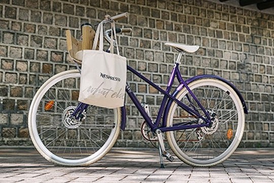
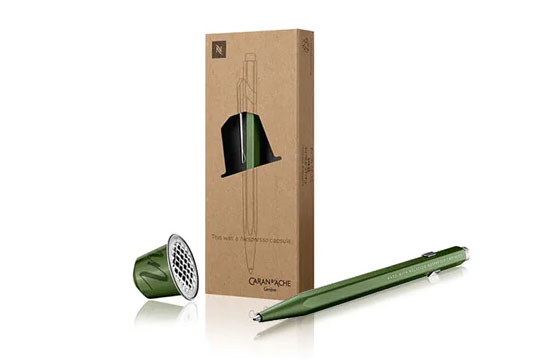

네스프레소 커피의 새로운 시작
커피 추출이 끝났다고 끝난것은 아닙니다.
사용한 커피 캡슐에게 새로운 시작을 선물하세요.
알루미늄 ALUMINIUM
알루미늄은 100%재활용이 가능할뿐만
아니라 무한한 재활이 가능합니다.
당신이 사용하신 캡슐을 보내주시면
사회적 기업과 함께 알루미늄은 생활용품
자동차 부품 등으로 재활용됩니다.
또한, 새로운 커피 캡슐, 자전거
스위스 나이프, 시계 케이스 등 일상의
새로운 제품으로 되돌아옵니다.
커피 COFFEE
알루미늄에서 분리된 커피 가루는
점점 더 혁신적인 방식으로
재사용되고 있습니다.
오늘날 이들은 농장의 거름으로
재활용되어 토양을 비옥하게 합니다.
또한 버스를 위한 바이오 원료와 같이
재생 에너지를 위해 사용되고
있습니다.
-

300개의 아르페지오 캡슐로 이루어진 벨로소피 리:사이클
(Velosophy RE:CYCLE) 자전거 -  커피캡슐이 재활용되어 만들어진 '카렌다쉬(Caren D'ache)펜'